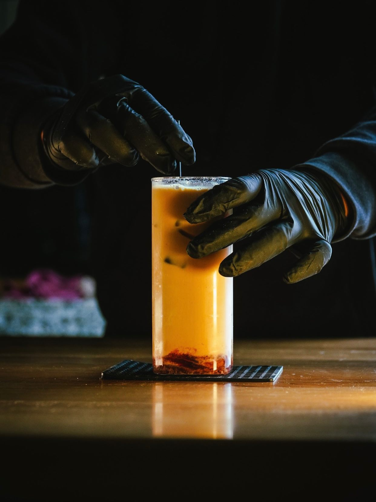
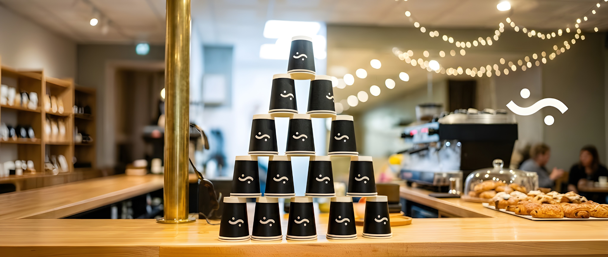
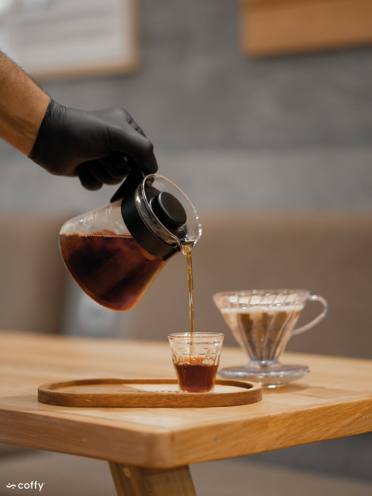
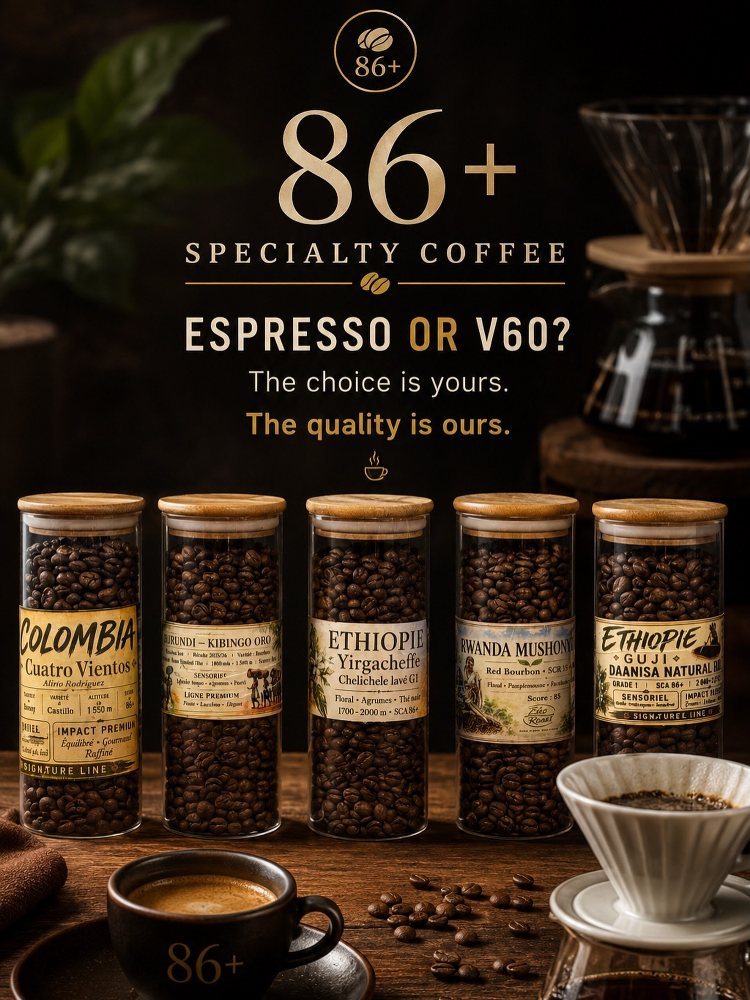
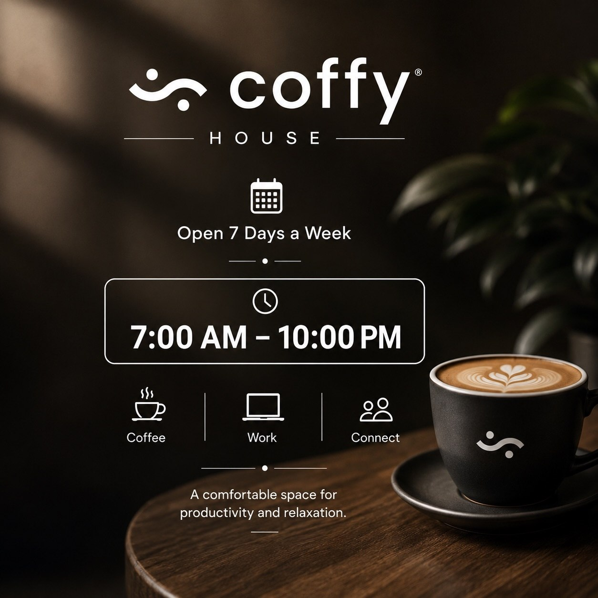

Une carte qui ne change pas selon la mode — espresso, filtre, matcha, brunch et crêpes.

Un robusta pour le corps et la constance, un arabica pour la finesse aromatique — assemblés puis déclinés selon la méthode. L'espresso reste dense et court ; le filtre, en mokapot, french press ou V60, ouvre sur des profils plus fruités quand le grain est single-origine.
Espresso classique, curtado, macchiato et americano en base. Au-delà, trois méthodes de filtration — mokapot, french press et V60 — chacune déclinée en robusta, arabica ou single-origine. Le cold brew reste en arabica, servi glacé.
À côté du café, un programme matcha complet et une carte brunch avec crêpes partagent la carte avec jus naturels et laits végétaux.
| Espresso | 17 – 28 MAD |
| Mokapot | 25 – 40 MAD |
| French press | 30 – 45 MAD |
| V60 | 35 – 50 MAD |
| Cold brew | 35 MAD |

Wifi gratuit, prises électriques, paiement carte, vente à emporter, non-fumeur, ouvert 7j/7.
Voir la carte →


Photographies issues du reportage maison Coffy°, Rue Ramallah 07, Abdelmoumen.